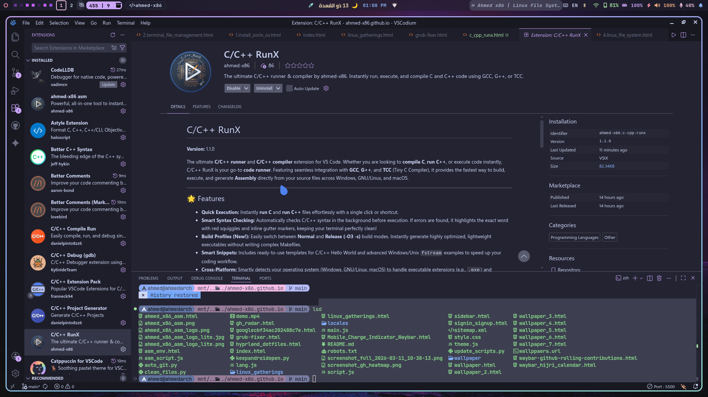

Write, check, build, and run C/C++ code with a single click!
✨ Key Features
- Smart Syntax Checking (New!): Automatically checks C/C++ syntax in the background before execution. Finds errors early and highlights them with precise red squiggles, keeping your terminal clean!
- Build Profiles (New!): Instantly switch between Normal and Release (-O3 -s) modes to generate highly optimized, lightweight executables.
- Cross-Compile & Simulate: On GNU/Linux & Mac, instantly compile C/C++ to a Windows executable (
.exe) using MinGW and simulate it seamlessly via Wine directly from the menu. - Multi-Compiler Support: Choose your weapon! Easily toggle between the standard GCC/G++ or the lightning-fast TCC (Tiny C Compiler) via the Settings menu.
- Clean Terminal Transparency: Executes commands in a dedicated terminal. It teaches you how compilers work under the hood instead of hiding the details like a black box.
- Assembly Generation: One click to translate your C/C++ code into Assembly (both AT&T and Intel syntax) for deep low-level analysis.
🛠️ Requirements & Dependencies
For the extension to work properly across all its features (including Cross-Compilation), you must install the core compilers (GCC/G++, TCC) and Windows emulators (Wine/MinGW).
🪟 Windows
Install MSYS2 and use pacman to get the GCC toolchain.
pacman -S mingw-w64-ucrt-x86_64-gcc make🍎 macOS Dependencies
Use Homebrew to install the required compilers and Wine for cross-platform simulation.
brew install gcc tcc mingw-w64 wine🐧 GNU/Linux Dependencies
Choose your Linux distribution below to install the required tools (gcc, tcc, mingw-w64, and wine).
Arch Linux / Manjaro / CachyOS
sudo pacman -S --needed gcc tcc mingw-w64-gcc wineDebian / Ubuntu / Linux Mint
sudo apt update && sudo apt install -y gcc g++ tcc gcc-mingw-w64 g++-mingw-w64 wineFedora / Nobara
sudo dnf install -y gcc gcc-c++ tcc mingw64-gcc mingw64-gcc-c++ wineVoid Linux
sudo xbps-install -S gcc tcc cross-x86_64-w64-mingw32-gcc wineGentoo
sudo emerge --ask sys-devel/gcc dev-lang/tcc dev-util/mingw64-toolchain app-emulation/wine-vanillaSolus
sudo eopkg install gcc tcc mingw-w64 wineopenSUSE
sudo zypper install -y gcc gcc-c++ tcc mingw64-gcc mingw64-gcc-c++ wineAlpine Linux
sudo apk add --no-cache gcc g++ tcc mingw-w64-gcc winePuppy Linux
pkg install gcc tcc mingw-w64-gcc wine📜 Built-in Snippets
Type the prefix in a .c or .cpp file and hit Tab for instant boilerplate code!
| Prefix | Description |
|---|---|
hello_world_c |
Generates a standard C Hello World. |
hello_world_c++ |
Generates a standard C++ Hello World. |
fstream_c++_windows |
C++ file handling template with Windows paths (C:\\...). Great for Wine testing! |
fstream_c++_unix |
C++ file handling template with Unix paths (/tmp/...). |
⚙️ How to Use
- Open any
.cor.cppfile in VS Code. - Quick Run: Click the Play button top-right or use the command palette to
Run CorRun C++. - Smart Menu: Press
Ctrl + Alt + Cto open the RunX Build Menu. From here, you can natively compile, generate Assembly, or cross-compile to Windows. - Settings Center: Open the command palette and select
C/C++ RunX: Settingsto:- Change your C compiler (GCC ↔ TCC).
- Change your Build Profile (Normal ↔ Release).
- Turn Wine debug logs ON/OFF.
- Syntax Errors? If you make a typo, the extension stops execution and points out the exact error with a red squiggle!